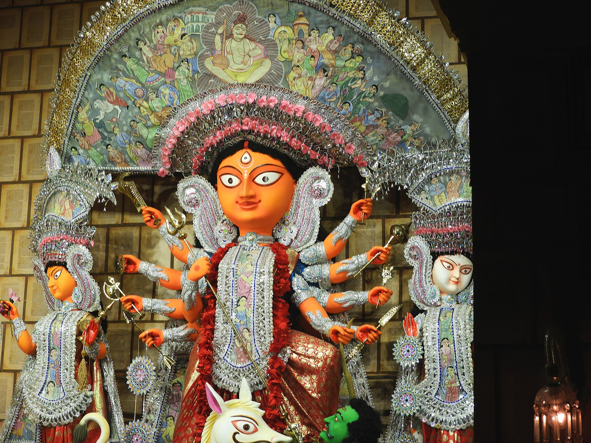
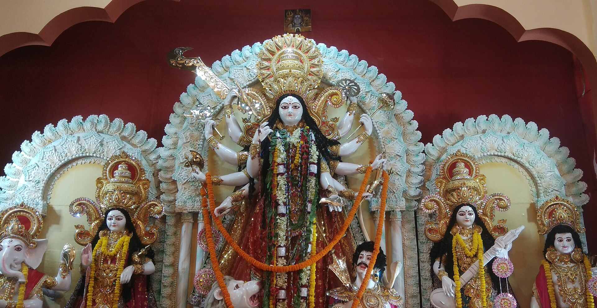
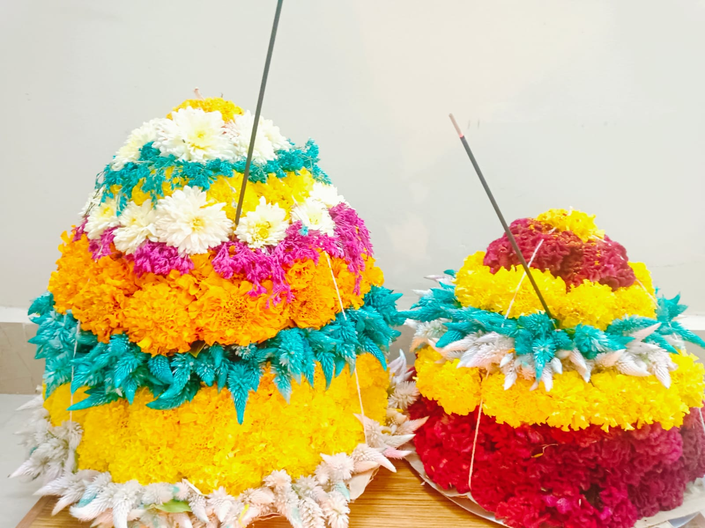

Daily Couples Pooja
Perform the evening Devi pooja on stage with your spouse. Slots at 7:00 PM every evening, 10 – 21 October.
Choose your day →
॥ या देवी सर्वभूतेषु शक्तिरूपेण संस्थिता ॥
Ambience Courtyard
Manikonda · 10 – 21 October 2026
Navaratri & Bathukamma come home to the Courtyard. Twelve days of pooja, Golu, Garba, Bathukamma and culturals — a place for every family to take part.
until the festivities begin

The invitation
Dear residents — with the blessings of Maa Durga, we warmly invite every family of Ambience Courtyard to come together for Navaratri & Bathukamma 2026. From Bathukamma's first blooms on 10 October, through the nine nights of Navratri (11–19 October), to Vijayadashami on 20 October, let us celebrate as one family — with devotion, colour, music and togetherness.
Navaratri honours the nine forms of the Goddess across nine sacred nights, while Bathukamma — the beautiful flower festival of Telangana — blooms alongside it, day by day, in the hands of our women and children. Both come together here at the Courtyard.
The festival of flowers
Bathukamma is Telangana's floral festival, celebrated by women and girls who arrange seasonal flowers in beautiful concentric tiers, sing, and dance around them. It unfolds over nine days, each with its own name and naivedyam (offering).

The nine days culminate in Saddula (Pedda) Bathukamma on 18 October — the largest and most joyful evening, when the whole community gathers with towering flower stacks, songs and dance before immersing them in water.
TangeduGunuguMarigoldChamantiLotus
Day by day
From Kalash Sthapana on 10 October to Vijayadashami on 21 October. Filter by what interests your family. Special poojas need a quick registration — tap Register under Participate.
Programmes are tentative and may shift with final registrations and weather.
Take part
Every day is a chance to pray, play and celebrate. Pick what suits your family and register in a minute.
Perform the evening Devi pooja on stage with your spouse. Slots at 7:00 PM every evening, 10 – 21 October.
Choose your day →Lalitha Sahasranama Kumkumarchana, Saraswati Pooja, Durgashtami Homam and Chandi Homam on Navami.
See dates →Display your Golu at the community Golu gallery. Register your steps and theme; kids specially welcome.
Register Golu →Dress in your dandiya best and dance under the lights. Community Garba on 14 & 17 October, 8 PM.
See culturals →Women & girls, bring your Bathukamma every evening at 6 PM to the lawns — and for the grand Saddula finale.
Learn more →A special pooja for the children of the Courtyard on 19 October, 7 PM — bring their books and slates.
Register your child →No registration needed. Just come to the Mandapam.
Six evenings on stage
Performances by residents of all ages at the Amphitheatre — dance, music, drama and, of course, Garba & Dandiya. Want to perform? Contact the Cultural Committee via your block group.
Seva & support
Every contribution, big or small, is a heartfelt offering that makes this celebration meaningful for our whole community. Pay your block collector by UPI or cash, then log it so your Gotra & Namam reach the daily sankalpam.
Pick your block and pay any collector. Tap a UPI ID to copy, or a number to call.
Keep the transaction reference, or hand cash to the volunteer.
Open the donation form below and log your flat, amount and transaction reference.
Takes about a minute on our Google Form. You'll be asked for:
The form saves straight to the committee's Google Sheet — tap Check your entry to see the live list anytime.
Sponsorship is completely voluntary. Slots confirmed on a first-come basis.
Glimpses
A glimpse of the devotion and colour — including our very first puja in 2024. Tap any image to view.
2024 photos © Ambience Courtyard community. Other images: Wikimedia Commons contributors (CC BY-SA).